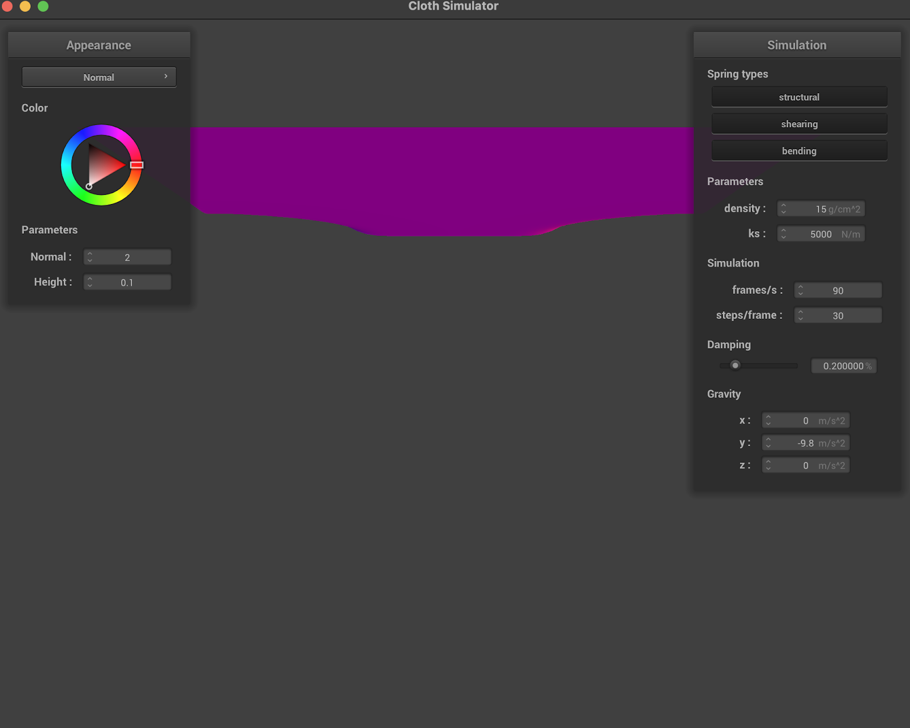

- Take some screenshots of scene/pinned2.json from a viewing angle where you can clearly see the cloth wireframe to show the structure of your point masses and springs. Show us what the wireframe looks like (1) without any shearing constraints, (2) with only shearing constraints, and (3) with all constraints.
- Show us what the wireframe looks like (1) without any shearing constraints, (2) with only shearing constraints, and (3) with all constraints.
Here is the scene where we can clearly see the structure of the point masses and springs.
Here is another view highlighting the structure of the point masses and springs:
Wireframe with no shearing constraints:
Wireframe with only shearing constraints:
Wireframe looks like with all constraints:
Testing parameters to see how it affects the cloth:
With regard to damping, as the damping value increases the \( k_s \) value (from 0.2000 to 1), the rate at which the cloth falls decreases. The reason for this is dampening resists fast changes to motion and this essentially means that as the damping value increases, the motion of the cloth will slow down. This may be hard to see with just screenshots, but I took screenshots of the falling of the cloth at the same time from the start of the cloth, and we can see the differences of how long it takes for them to fall. I took screenshots of both of the pieces of cloth 3 seconds after starting, so we can see the difference in how far they fall for different damping values.
Damping of 1:
Damping of 0.2:
Changing ks value:
This is the cloth with ks increased. The new ks value is 50000. This makes sense to increase how taut the cloth is, which is what we can see relative to the previous cloth. Essentially, as the ks value increases, how taut the cloth is increases.
The Cloth Landing Still with Normal Parameters:
Pictures of shaded cloth on final resting state on the sphere at different parameters.
KS = 5000
KS = 500
KS = 50000
The Cloth is in different orientations for the different values of ks. As ks increases, the degree to which the cloth is away from the ball increases. The reason for this is that the ks is the spring constant of the ball, and as the spring constant increases, the amount the cloth is away from the ball should also increase.
Cloth Lying Peacefully on the Plane:
Part 4
- Show us at least 3 screenshots that document how your cloth falls and folds on itself, starting with an early, initial self-collision and ending with the cloth at a more restful state (even if it is still slightly bouncy on the ground).
- Vary the density as well as ks and describe with words and screenshots how they affect the behavior of the cloth as it falls on itself.
Here are three screenshots of the cloth as it falls and folds itself, starting with the initial self-collision and ending with the cloth fully folded on the ground.
As ks increases, the spring constant becomes bigger, which essentially means that the ability of the cloth to avoid decomposing into the ground increases as the increase in spring constant makes the cloth more taut as a result of the spring property of the cloth increasing. Here is an image of the cloth colliding with the ground with an increased ks value; the cloth has such a high spring constant that it can’t even start folding upon collision.
The same idea happens with density as the density values increases. The cloth essentially becomes more dense, which means it is harder for it to fold and shrink as it collides with the ground. Below is an example of the cloth colliding with the ground with an increased density value.